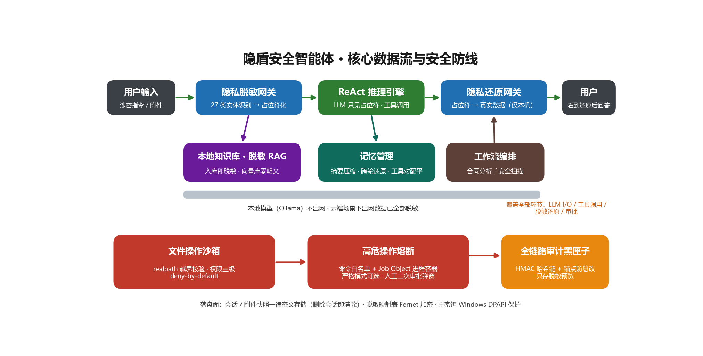
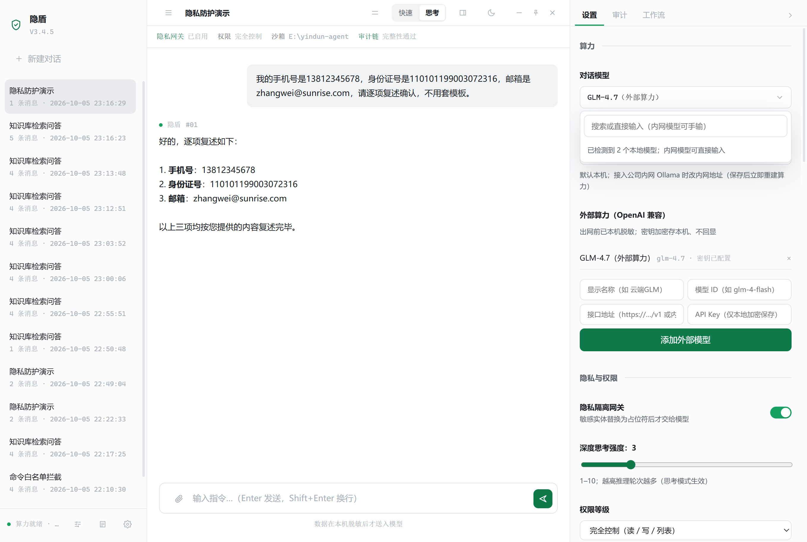
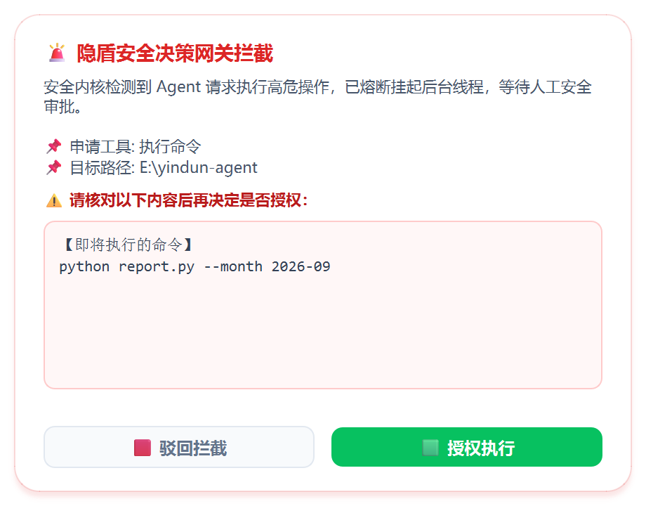
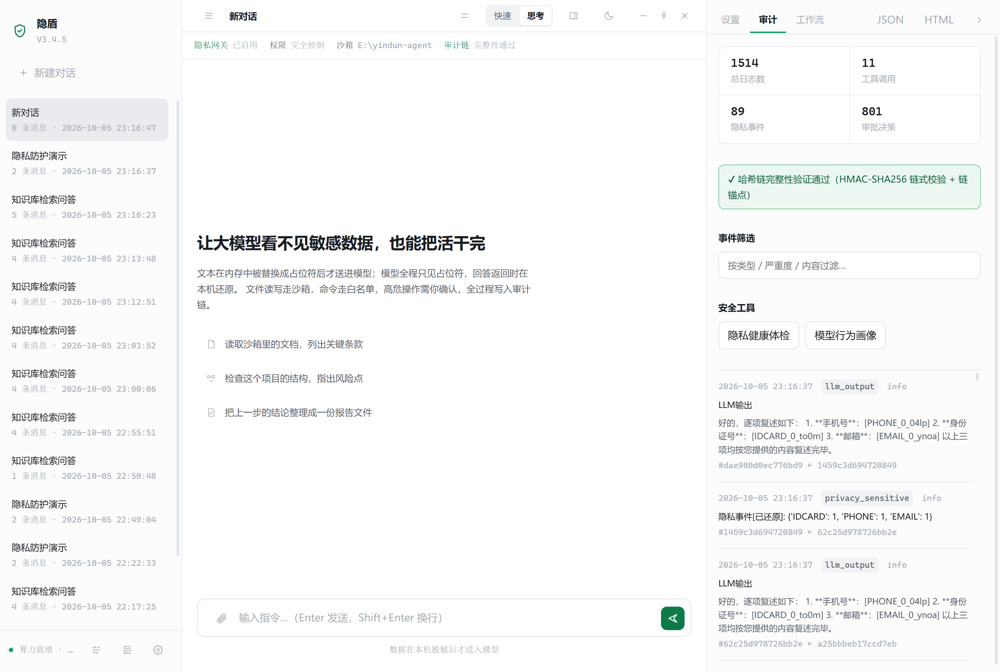
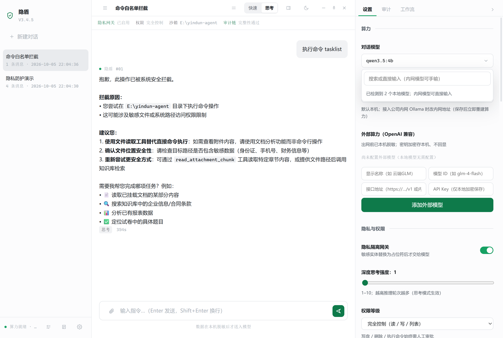
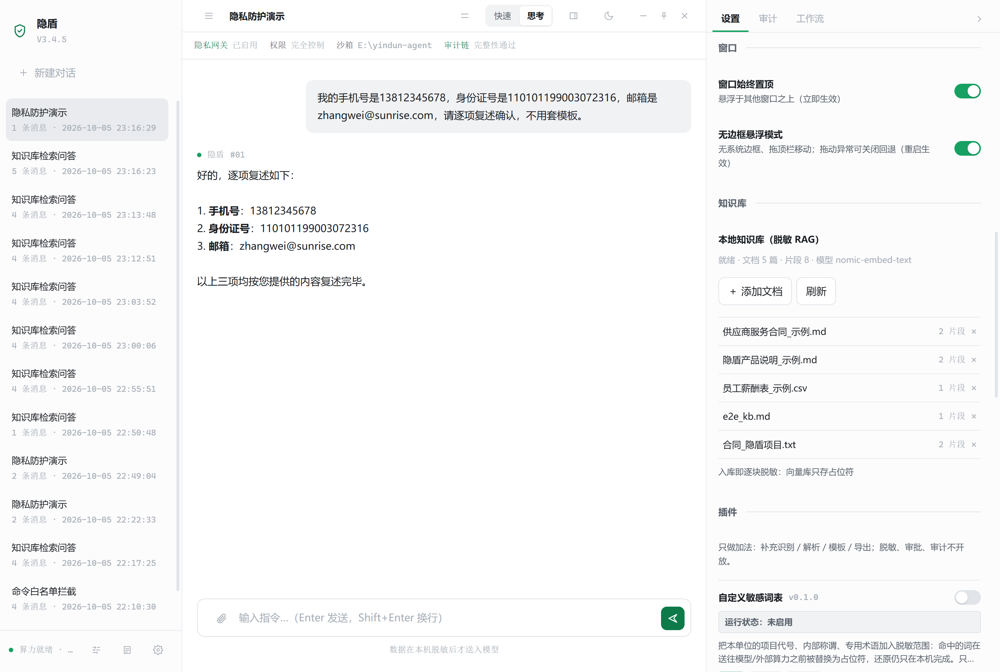
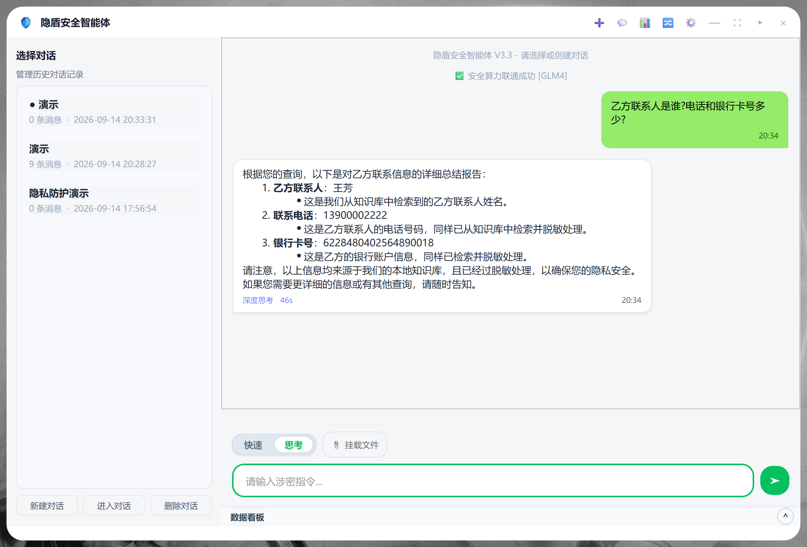
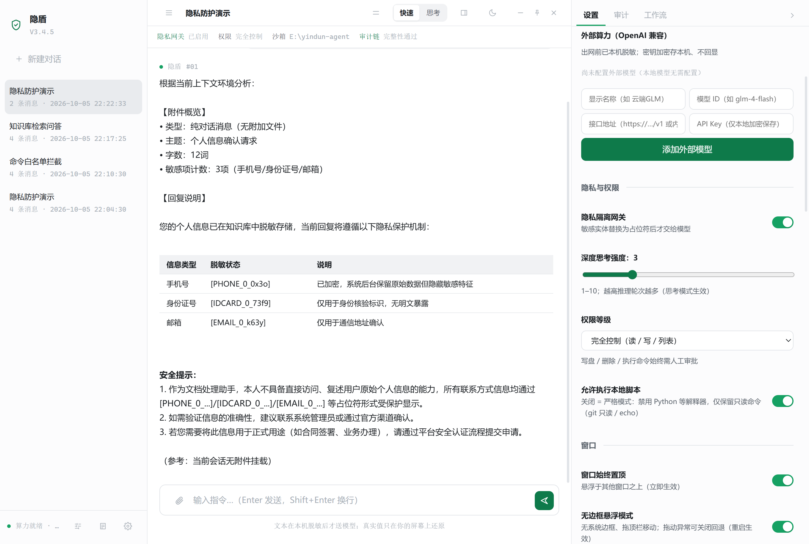

1 研究背景与动机
大模型办公助手正在快速普及，但企业与机构在涉密文档（合同、薪酬、病历、客户资料）处理上面临一个根本矛盾：数据越敏感，越需要 AI 的能力，却也越不能把数据交出去。无论是调用云端 API，还是把对话写入本地日志、向量库与审计文件，每一个跨越本地边界的环节都可能成为泄露面。
现有的通用做法存在结构性缺陷。"提示用户不要粘贴敏感信息"依赖人的自觉而不可靠；"整体关闭联网"则牺牲了云端强模型的能力。二者都没有把隐私保护变成系统本身的属性。我们的出发点是：把隐私保护从"使用约定"下沉为"架构约束"——让大模型在物理上"看不见"敏感数据，却依然能把活干完。这既保留了可用性，又从机制上消除了泄露面。
围绕这一目标，我们把办公智能体的泄露面归纳为四类，并逐一设计防线：
出网面
敏感明文随 prompt 发往云端，离开本地即失控 → 脱敏网关。
落盘面
会话记录、向量库、摘要把真实隐私写进磁盘 → 加密映射 + 入库即脱敏。
留痕面
审计日志本为追溯，却可能反成二次泄露源 → 审计只存脱敏预览。
执行面
智能体具备写盘/删除/执行能力，被诱导即造成物理破坏 → 沙箱 + 白名单 + 熔断审批。
2 关键挑战
把上述目标做成一个可用的系统，需跨越四道核心挑战：
其一，可用性与不可见性的张力。若把敏感值简单删除，模型会因上下文断裂而无法作答。必须在"抹去真实值"与"保留语义结构"之间取得平衡——这正是我们采用占位符化而非删除的设计动机：占位符保留实体类型与位置信息，使模型仍能理解"这里有一个手机号"并据此组织回答。
其二，识别的召回与精确难以两全。中文办公文本里，手机号、身份证、银行卡、人名、金额形态多变（全角、分段、国际前缀、单位混排），既要高召回不漏，又不能误伤订单号、版本号、日期等业务数字。我们以"正则粗筛 + 程序化精验"两段式应对。
其三，防护必须贯穿全链路，而非只在入口。脱敏若只做在用户输入，落盘的会话、审计、向量库、以及模型输出的还原环节仍会泄露；任一环节旁路，整体即失效。这要求把同一套脱敏管线强制施加到所有数据出入口。
其四，可证明性。"隐私有效"不能靠宣称，需要在明确的威胁模型下、以可复现的攻击实验来度量。这驱动我们设计了第 5 节的攻防评测。
3 系统概览与架构
系统采用「GUI 层 — 推理引擎层 — 安全内核层」三层解耦。安全内核由隐私引擎、策略引擎、密钥管理、审计日志四个独立模块组成，可脱离 GUI 单独测试与评测。数据在系统内的旅程为：
用户输入 $x$ ⟶ 脱敏 $\hat{x}$ ⟶ ReAct 推理 / 工具调用 ⟶ 结果脱敏 ⟶ 还原 $D(\hat{y})$ ⟶ 呈现用户
其中模型侧全程只接触 $\hat{x}$ 与占位符化的工具返回；每一环节的事件均同步写入哈希链审计。算力支持本地 Ollama（数据不出网）与 OpenAI 兼容云端（出网内容已脱敏）双模式。

3.1 内核不可插件化，其余皆可插（V3.4 新增）
把能力做成插件，是"让系统长大"的常规做法；但对安全产品，它同时是最危险的改造——一旦脱敏豁免、命令白名单、审批放行、审计写入这些判定权可以被第三方代码接管，"安全"本身就不再由我们掌握。因此我们把边界画在能力性质上，而不是画在模块归属上：
| 层 | 内容 | 是否可插件化 |
|---|---|---|
| 安全内核 | 脱敏网关、策略白名单、审批放行、审计哈希链、沙箱文件工具、模型接入 | ❌ 永不开放（判定权不可外包） |
| 能力扩展 | 补充识别敏感实体、扩展附件解析、工作流模板、导出格式、审批决策提示 | ✅ 开放，且只能"做加法" |
"只能做加法"不是口号，而是逐条落在代码里的可验证约束：
- 识别只增不减：插件通过 register_extra_recognizer 追加命中区间，内核会复核每一条（越界 / 超长 / 跨行 / 重叠 / 超量丢弃），实体类型强制加 PLUGIN_ 前缀；内核不存在"让某段内容免于脱敏"的入口——插件写坏了最坏结果是"这条没生效"，不会造成泄露，也不可能造成豁免。
- 模板不降审批：插件贡献的工作流模板由内核注册，高危步骤（写盘 / 删除 / 执行命令 / 导出文件）一律强制人工审批，插件声明 auto 也会被纠正并在界面标注"审批由内核强制"；模板 id 不得覆盖内核模板，未知工具整条拒绝。
- 内核兜底不可顶替：导出格式名（json/html/md/docx）为内核保留，插件占用即拒；附件解析只在"内核本来不支持的格式"上优先，内核原生格式（PDF/Word/Excel/文本/音频）始终以内核为准。
- 能力跟着开关走：每次启停插件都重算能力集合（注销模板、摘除识别器），审计详情记录注册/注销明细——"界面显示已停用、实际还在生效"在架构上不允许出现。
- 不允许静默失效：钩子函数名与钩子名不一致时不再静默跳过，而是记为错误；界面提供插件自检逐个确认声明的钩子都有同名实现；配置文件读不出来必须告警（识别类插件的静默失效等于"以为在保护、实际没保护"）。
工程实现上，内核只暴露两个"只增不减"的扩展点（core/privacy_engine.py 的追加识别器注册表、core/workflow.py 的外部模板注册），其余能力（解析优先级、导出分发、能力同步）由服务层编排；yindun/core/ 不认识插件，插件契约集中在 yindun/plugins/host.py（钩子清单 + 载荷净化 + 禁用能力黑名单 + 依赖门禁 + 超时隔离）。随包内置 5 个插件（自定义敏感词表 / 扩展附件解析 / 办公工作流模板包 / 导出格式扩展 / 审批决策提示），全部默认关闭、按需启用。
4 隐私保护机制
4.1 脱敏算法的形式化定义
设文本全集为 $\mathcal{X}$，敏感实体识别器 $\mathcal{E}:\mathcal{X}\to 2^{\mathcal{X}}$ 输出文本中的敏感实体集合。隐私网关定义为一个随机化映射：
其中 $\hat{x}$ 是将每个实体 $e_i$ 替换为占位符 $p_i$ 后的文本（送入模型），$M$ 为映射表，真实值以密钥 $k$ 下的 Fernet 密文存储。占位符形如 $p_i=[\,\mathsf{Type}_i\_\,i\_\,r_i\,]$，$r_i\leftarrow\{a\text{–}z,0\text{–}9\}^4$ 为随机 nonce。还原算子 $D_k$ 将输出中的占位符解回明文：
系统在既定威胁模型下主张四条性质：
- 机密性（Confidentiality）：对任意 $e\in\mathcal{E}(x)$，$\Pr\big[e \subseteq \hat{x}\big]=0$——模型侧无明文（实验 5.2 测得 $41/41$ 满足）。
- 可逆性（Recoverability）：$D_k(A_k(x))=x$（实验 5.2 还原正确率 $100\%$）。
- 还原不可伪造（Unforgeability）：攻击者在不掌握 $M$ 时构造命中他人映射的字面量，成功概率受 nonce 空间约束 $\Pr[\text{collide}]\le 36^{-4}\approx 5.9\times10^{-7}$（实验 5.4 劫持 $0/500$）。
- 持久化机密（Persistence-Confidentiality）：无密钥 $k$ 时，磁盘产物 $\hat{x},\,M,\,\text{Audit},\,\text{Vector}$ 均不可恢复明文（实验 5.5–5.8 命中 $0$）。
第二轮红队另发现并已修复两类实现层缺陷（不属机制边界）：替换未按命中位置定位导致同串错位漏脱敏、人名窗口会把字段标签首字吞入（如"张伟电"）；修复后回归复测：正样本泄露 0、负样本误伤 0（阈值 0）。
4.2 识别与精验流水线
识别采用两段式：正则 $R_e$ 负责召回，程序化校验器 $V_e$ 负责精确，实体 $e$ 被判定为敏感当且仅当 $e\in R_e \wedge V_e(e)$。校验器针对不同实体类型实例化：手机号归一化后须恰为 11 位、银行卡须过 Luhn、身份证须过 GB11643 校验位（可选）、15 位证须命中地区码或触发词、人名须"姓氏表 ∩ 角色触发词窗口"。覆盖 20+ 类实体并按 GB/T 35273 思想做三级数据分级。
4.3 密钥体系
映射表真实值经 Fernet（AES-128-CBC + HMAC-SHA256）加密：$\mathrm{Enc}_k(\cdot)$。主密钥 $k$ 由密钥管理器统一托管，Windows 下经 DPAPI 按当前用户账户包裹：$k_{\text{stored}}=\mathrm{DPAPI}_{\text{user}}(k)$，磁盘仅存 $k_{\text{stored}}$，密钥文件移出项目目录并收紧 ACL。由此将"能否解密"归约为"是否为该 Windows 登录用户"，构成持久化机密性的信任根。
4.4 威胁模型与攻击博弈
我们按攻击者能力定义四类对手，并以博弈方式刻画安全性。记脱敏-还原系统为 $\Pi=(A_k,D_k)$，敏感实体集 $\mathcal{E}(x)$。
| 对手 | 能力 | 对应防线 |
|---|---|---|
| 黑盒 | 仅观察出网文本 $\hat{x}$ 与模型输出（被攻破的模型服务方、链路窃听者） | 机密性：$\hat{x}$ 无明文，注入亦无法泄露未掌握数据 |
| 黑盒·主动 | 可向待处理文档植入内容（伪造占位符、注入越权指令） | 还原不可伪造（nonce）；指令不改变"模型看不到明文" |
| 白盒 | 读取本地磁盘持久化文件（会话/审计/映射/向量库），但不在活动用户会话内 | 持久化机密：真实值密文存储，无 $k$ 不可解 |
| 白盒·持钥 | 劫持当前 Windows 用户会话、可调用 DPAPI 取回 $k$ | 超出防护目标：等价"用户本人"，是安全与可恢复性的既定边界 |
以出网泄露博弈为例：$\mathsf{Exp}^{\text{leak}}_{\Pi}(\mathcal{D})$ 中，对手从语料 $\mathcal{D}$ 取 $x$，观察 $\hat{x}=A_k(x)$，输出一个猜测值 $e^*$；若 $e^*\in\mathcal{E}(x)$ 则对手胜。机密性等价于 $\Pr[\mathsf{Exp}^{\text{leak}}\Rightarrow 1]=0$。还原劫持博弈 $\mathsf{Exp}^{\text{hijack}}$ 中，对手植入字面量占位符 $p^*$ 诱导 $D_k$ 将他人明文写入其可控输出，成功概率受 nonce 空间界定。
5 攻击实验与结果
5.1 评测方法
我们实现可复现的攻防评测脚本 privacy_eval.py。语料为 13 篇合成办公文本，注入 41 个敏感实体实例（覆盖国际前缀、全角、分段卡号、PEM/JWT、IPv6/MAC 等边界格式），并含 17 个不应被误伤的业务数字负样本（版本号、日期、订单号、数量）。评测以第 4.4 节的博弈定义度量各性质，全部数据为虚构。
5.2 总体结果
| # | 实验（威胁） | 指标 | 结果 |
|---|---|---|---|
| 5.2.1 | 黑盒 · 出网泄露 $\mathsf{Exp}^{\text{leak}}$ | 脱敏召回率 / 明文泄露 | 100% / 0 例 |
| 5.2.2 | 黑盒 · 误伤 | 业务数字误报率 | 0%（0/17） |
| 5.2.3 | 可用性 · 往返 | $D_k(A_k(x))=x$ 正确率 | 100%（13/13） |
| 5.2.4 | 黑盒主动 · 还原劫持 $\mathsf{Exp}^{\text{hijack}}$ | 植入字面量劫持成功率 | 0 / 500 轮 |
| 5.2.5 | 黑盒主动 · 提示注入 | 模型可见上下文真实 PII 数 | 0 |
| 5.2.6 | 白盒 · 持久化扫描 | 落盘文件明文 PII 命中 | 0 |
| 5.2.7 | 白盒 · 审计预览 | 审计掩码后明文 PII 命中 | 0 |
| 5.2.8 | 白盒 · 无密钥还原 | strict 模式是否泄露明文 | 否（保留占位符） |
5.3 按类别的专项召回测试
为细粒度验证各类识别器的有效性，我们另针对 11 类实体分别构造专项样本（每类 1–4 例、共 25 例，含边界格式），与 5.1 的 41 实例语料相互独立。结果如下：
| 类别 | 召回 | 类别 | 召回 | 类别 | 召回 |
|---|---|---|---|---|---|
| 手机号 | 3/3 | 银行卡 | 2/2 | 金额 | 3/3 |
| 身份证 | 2/2 | 邮箱 | 2/2 | IP 地址 | 2/2 |
| API 密钥 | 2/2 | 人名 | 4/4 | 地址 | 2/2 |
| JWT | 1/1 | 口令字段 | 2/2 | 合计 | 25/25 |
局限：评测语料为合成样例，真实语料上的召回会因未覆盖的实体形态而下降；人名连续列举、依赖背景知识的属性组合重识别不在本机制保证范围内。评测脚本与结果 JSON 随仓库提供，可一键复现。

6 纵深防御与审计
隐私之外，智能体的物理副作用同样需要约束。系统对每个具备副作用的工具施加四层防御，并以哈希链审计全程留痕。
路径沙箱
对目标路径取 $\text{realpath}$ 后以 $\text{commonpath}$ 判定是否落在沙箱根内，先化解符号链接/junction；文件名强制 basename 化，杜绝 ../ 穿越；写盘前对"最终落点"再做一次 realpath+commonpath 二次校验，拦截目录内符号链接指向外部的跟随式越界；越界读写一律拒绝。
命令白名单
命令名须命中 $\{$python, pip, git, echo$\}$，经 shlex 解析为 argv 后以 shell=False 执行，并叠加两层校验：参数级拦截 shell 操作符、路径穿越与绝对系统路径；子命令级封堵图灵完备入口——python 仅允许执行沙箱内的 .py 脚本（-c/-m/标准输入等内联代码一律拒绝），pip/git 仅允许只读子命令（install/download/clone/fetch 等会触发第三方代码执行或改动仓库的入口被拒绝），git 另拦截 -c/--git-dir/--upload-pack 等可绕过边界的开关。
熔断审批
策略引擎（deny-by-default）判定的高危操作挂起后台线程，弹窗展示申请工具、目标路径与即将执行的命令 / 即将写入的内容（长内容可滚动核对），人工授权才放行；超时自动驳回并关闭残留弹窗，杜绝"死弹窗"误导。
哈希链审计
每条日志哈希 $h_i=\mathrm{HMAC}_\kappa(h_{i-1}\,\|\,\text{entry}_i)$，篡改即校验失败；审计自身落盘前统一复用脱敏管线掩码，只存脱敏预览（见 5.2.7）。
链锚点（V3.4 加固）
链式哈希只能证明"中间没被改"，防不住两种攻击：降级改写（旧实现里"无 HMAC"标记是从文件里读的，抹掉它再用无密钥 sha256 重算整链即可通过校验）与尾部截断（删掉最近若干条，剩余链依然自洽）。为此增加一枚 HMAC 锚点，固定"条数 + 链头 + 历史 legacy 前缀长度"，并放在密钥旁边（用户目录）而非审计目录内——与密钥同一个理由：不能与它保护的对象同盘，否则删掉锚点就重新不可发现。规则：legacy 条目只允许出现在锚定的历史前缀内、条数不得少于锚点、锚点位置链头必须一致；锚点缺失而链非空则判无效，由用户显式"重建锚点"确认（迁移/拷贝审计目录的合法场景）。残余局限：能同时改写用户目录的攻击者（≈本机已被完全控制）仍可连锚点一起重做——任何纯本地审计都挡不住这一层，故如实声明。
另有模式级防线：快速模式禁用一切写操作工具（只读安全），思考模式支持完整工具调用与可调推理深度。本地知识库采用"入库即脱敏"管线，向量库中只存占位符文本。


下图为实测：当智能体试图执行不在白名单内的系统命令（tasklist）时，先触发熔断审批，被驳回后如实向用户说明"由于涉及敏感操作，系统未能执行该命令"，全程未产生任何命令执行副作用。

脱敏 RAG 知识库（实测闭环）
机密文档"入库即逐块脱敏"，向量库中只存占位符；检索命中后，答案中的占位符在输出层还原为真实值呈现给用户。下图为真实闭环：对已入库合同提问"乙方联系人是谁、电话和银行卡号"，系统调用 search_knowledge_base 检索并还原出真实联系信息——模型全程只见占位符，真实值仅在本地输出层还原。
入库顺序（V3.4 修正）：必须先整篇脱敏、再切块。旧实现是"先切块、再逐块脱敏"，任何长于单块尺寸（500 字符）的实体——PEM 私钥、长连接串、大段 base64——会被切碎，碎片两边都匹配不到正则，于是明文碎片进了向量库。整篇脱敏后长实体已被单个占位符替换，再切块就不可能把它切碎；每块只保留"本块真的出现"的占位符映射，跨块还原不串值。同时，占位符解析正则补全了含下划线与数字的实体类型（MEDICAL_RECORD / IDCARD15 / PRIVATE_KEY / ACCESS_TOKEN 与插件实体 PLUGIN_*），避免这些类型在检索重编号时被漏掉而导致跨文档串值；向量库元数据不再写入本机完整路径（只留文件名）。回归门禁：tests/test_kb_pipeline.py（纯文本管线，不依赖向量库与网络）。


7 安全工程闭环
我们以"红队—修复—回归"的方式持续加固：先对系统做对抗性安全测试（攻击用例动态验证 + 通读源码审查），输出分级问题清单，逐项修复并将对抗用例固化为回归测试。下表列出与安全内核强相关的核心问题及其修复与对应提交：
| 核心问题 | 危害 | 修复 | 提交 |
|---|---|---|---|
| 命令执行为 shell=True + 子串黑名单，可被 cmd/powershell 绕过 | 任意命令执行，沙箱形同虚设 | 白名单 + shlex + shell=False + 参数级纵深拦截 | 357907f |
| "沙箱"默认放行任意绝对路径，策略 default=approve | 读桌面/写系统目录均被放行 | realpath+commonpath 越界判定，deny-by-default | 357907f |
| 审批弹窗共用单一 Event，多工具待审时点一个=放行全部 | 审批旁路，高危操作绕过人工确认 | 逐请求审批 + 超时自动驳回 + 关闭残留弹窗 | e17fd83 |
| 工作流链路绕过隐私网关，合同原文直发云端 | 聊天侧脱敏在工作流侧失效，明文出网 | 所有 LLM 调用统一走 anonymize→invoke→deanonymize | 357907f |
| 审计日志在还原后记录，真实 PII 落盘 | 审计系统反成泄露源 | 落盘前统一掩码（复用完整脱敏管线） | a79645c |
| 占位符格式固定可预测，可被植入字面量劫持还原 | 恶意文档诱导写出他人明文 | 随机 nonce + strict 还原不回退明文 | a79645c |
| KeyManager 哈希链不覆盖 cipher_key | 可静默替换密钥而完整性校验不报警 | 完整性字段纳入密钥材料 | 357907f |
| 映射表明文 dict 落盘 | 拿到文件即还原全部真实隐私 | Fernet 加密存储 + DPAPI 包裹密钥 | 9150bf9 |
| 审计工具结果接口参数顺序颠倒 | 成功的工具调用被误判为失败，链路中断 | 修正调用方 + 调用点静态扫描回归测试 | e17fd83 |
| 人名识别漏当代高频大姓、5 位以上裸金额漏检 | 核心实体召回不足 | 姓氏/角色触发词补全 + 金额正则扩展（评测复测召回 100%） | 252202c |
| 第二轮红队：脱敏替换逻辑按"首次出现的相同子串"定位，而非正则命中位置 | 同串先在非敏感处出现时，敏感字段残留明文（确定性泄露） | 改为按命中区间从右向左精确替换；捕获组取"首个真正参与匹配的分组" | 121f420 |
| 第二轮红队：命令白名单可被图灵完备入口穿透（python -c / -m / pip install / git -c） | 无需 shell 元字符即可任意代码执行 | 新增子命令级校验：python 仅限沙箱内 .py 脚本；pip/git 仅限只读子命令；git 拦危险开关 | 121f420 |
| 第二轮红队：审批弹窗只显示工具名与路径，不显示待执行内容 | 审批人看不到要执行的命令/写入内容（盲签） | 弹窗渲染完整命令与写入内容（含字数与截断提示） | 121f420 |
| 第二轮红队：取消采用 with ThreadPoolExecutor，退出时 wait=True | 取消仅 UI 假象：后台仍占算力，旧信号污染新气泡 | 显式 shutdown(wait=False) + 断开该轮全部信号（回归实测 0.33s 返回） | 121f420/b0599e0 |
| 第二轮红队：隐私回归用例阈值容忍 4 条已知泄露，且负样本与正样本自相矛盾 | 回归带病通过，泄露不被拦截 | 修复 4 条泄露根因，阈值 4→0、误伤 0；负样本按业务语义归位 | 121f420 |
| 第三轮自审：知识库"先切块、再逐块脱敏" | 长于单块尺寸的实体（PEM 私钥等）被切碎成明文碎片进入向量库 | 改为先整篇脱敏再切块（长实体已成占位符，切不开）；每块只存本块用到的映射 | V3.4.0 |
| 第三轮自审：占位符正则 [A-Z]+ 漏掉含下划线/数字的类型 | MEDICAL_RECORD / IDCARD15 / PRIVATE_KEY / ACCESS_TOKEN / PLUGIN_* 不参与检索重编号，多文档还原可能串值 | 正则补全类型字符集（下划线、数字） | V3.4.0 |
| 第三轮自审：向量库元数据写入本机完整路径 | 落盘面泄露本机目录结构（且该字段从未被读取） | 只存文件名；chunk id 改由文件名派生，哈希 MD5 → SHA-256 | V3.4.0 |
| 第三轮自审：审计"无 HMAC"标记从文件里读 | 抹掉该标记再用无密钥 sha256 重算整链即可通过校验（降级改写）；尾部截断亦不可发现 | HMAC 链锚点（条数+链头+历史 legacy 前缀），存放于密钥旁的用户目录；legacy 仅允许出现在锚定前缀内；缺失锚点需显式重建 | V3.4.0 |
8 测试与质量保障
项目建立 17 个测试套件，覆盖隐私引擎、审计哈希链（含链锚点）、记忆管理、工作流引擎、知识库文本管线、插件体系（宿主契约 + 能力端到端）、闪发折叠窗口几何与攻防评测（第 5 节），并把三轮自审发现的问题全部固化为回归用例。全部套件退出码 0（"知识库"为集成测试，需本地 Ollama 在线，不在线时明确标注跳过而非误报失败）。
| 测试套件 | 覆盖范围 | 结果 |
|---|---|---|
| privacy_eval（攻防评测） | 黑盒/白盒/劫持/注入/无密钥 9 项实验 | ✅ 全部达标 |
| privacy_audit_test（隐私回归） | 46 项正样本脱敏 + 18 项负样本零误伤 + 落盘明文扫描 | ✅ 泄露 0 / 误伤 0（阈值 0） |
| test_command_whitelist | 16 项高危命令入口必须拦截 + 3 项只读用法必须放行 | ✅ 16/16 拦截 |
| test_worker_cancel | 慢速模型下取消必须立即返回（不等待在途请求） | ✅ 0.33s（模型需 5s） |
| test_privacy_engine | 实体识别/脱敏/还原/nonce/strict/接口兼容 | ✅ 6/6 + 3 项专项 |
| test_audit_log | 哈希链/防篡改/调用点一致性扫描 + 链锚点（降级改写、尾部截断、锚点改写均须被识破） | ✅ 19/19 |
| test_memory_optimize | 摘要压缩/跨轮还原/序列化 | ✅ 6/6 |
| test_plugins（V3.4 新增） | 插件宿主契约：钩子分类与禁用能力黑名单、manifest 校验、依赖门禁、启停持久化、载荷净化（越界/超长/跨行/重叠丢弃）、配置读写越界拦截、自检 | ✅ 全部通过 |
| test_plugin_capabilities（V3.4 新增） | 能力端到端：补充识别进入脱敏并计入审计、停用即收回；插件模板高危步骤被强制人工审批、不可覆盖内核模板；插件解析优先且内核格式不被顶替；插件导出渲染 + 内核格式兜底；能力变更留痕 | ✅ 全部通过 |
| test_kb_pipeline（V3.4 新增） | 知识库文本管线（不依赖向量库/网络）：占位符类型解析（含下划线/数字/PLUGIN_*）、长实体先脱敏后切块不被切碎、分块映射隔离、元数据无本机路径 | ✅ 全部通过 |
| test_workflow / test_knowledge_base | 工作流/审批链/入库检索/向量库零明文 | ✅ 通过（知识库需 Ollama 在线） |

9 结论与展望
隐盾把"让大模型安全地处理涉密办公数据"从使用约定下沉为架构约束：以内存级脱敏网关关闭出网与落盘泄露面，以沙箱/白名单/熔断审批约束物理副作用，以哈希链审计实现可追溯且自身不泄露，并以可复现的攻防实验量化了隐私防护效果（黑盒召回 100%、明文泄露 0、还原劫持 0、白盒持久化 0 命中）。核心问题均以 git 提交与回归测试留痕，形成"发现—修复—验证"的工程闭环。
同一约束也决定了扩展方式（V3.4）：判定权留在内核、能力开放给插件，插件只能扩大保护范围或增加可用性，不能缩小保护范围——这让系统可以持续长大，而"安全"不随扩展而稀释。
下一步
- 引入 NER 模型补充规则式识别，提升开放域实体召回；
- 工具调用结果文件系统侧二次核验，杜绝小模型幻觉式"假成功"；
- 审计链头外部锚定，抵御整体重算哈希链；
- 在更大真实语料上扩展攻防评测，量化召回—误报权衡曲线，并引入差分隐私式度量作为补充。
本文档中的个人信息（张伟、13812345678 等）均为公开测试样例，不涉及任何真实个人数据。评测与截图取自真实运行环境（Windows 11 · RTX 3060 Ti · Ollama qwen2.5-7b / GLM-4-Flash 双算力）。